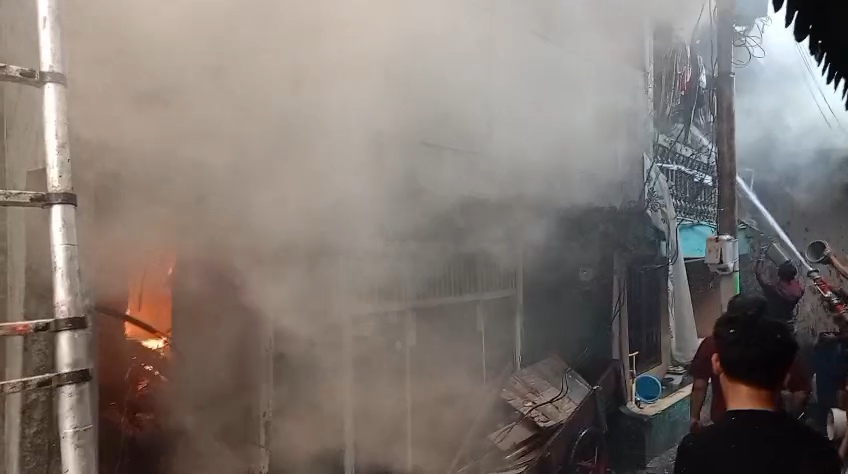
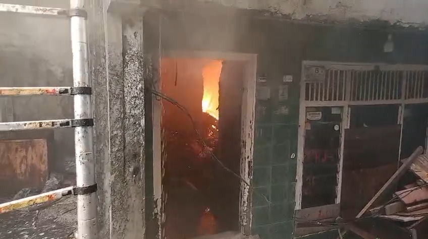
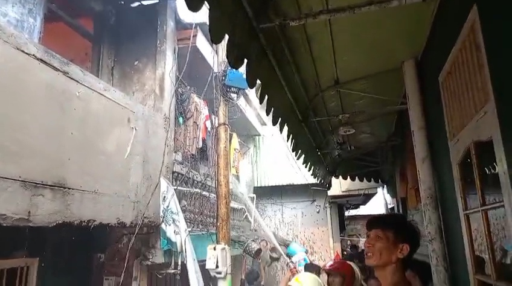
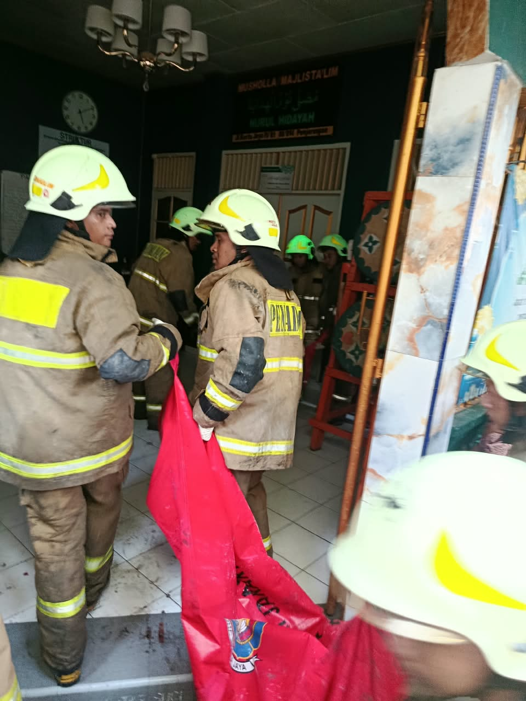

Kebakaran di Penjaringan Tewaskan Dua Orang, 174 Warga Terdampak

Kebakaran melanda permukiman warga di Jalan Kertajaya, Kelurahan Penjaringan, Jakarta Utara, Selasa (13/10/2026). Api menghanguskan 35 rumah dan 8 pintu kontrakan.
Sebanyak 58 kepala keluarga atau 174 jiwa terdampak dan sementara mengungsi di Musholla Rahimakumullah. Dua orang meninggal dunia, yaitu seorang anak laki-laki berusia sekitar 5 tahun dan seorang perempuan berusia sekitar 70 tahun. Lima orang lainnya luka dan mengalami gangguan kesehatan, termasuk warga dan petugas pemadam. Kebakaran diduga disebabkan korsleting listrik.

Kronologi
Kebakaran terjadi di rumah semi permanen di Jalan Kertajaya IV, RT 007 dan RT 017, RW 004. Api diketahui sekitar pukul 13.50 WIB. Seorang warga melihat api dan melapor ke posko pemadam terdekat serta layanan darurat 112.
Sebanyak 26 unit (22 Jakarta Utara, dua Jakarta Barat, dua Bidang Operasi) dan 130 personel dikerahkan. Kasiops Sudin Gulkarmat Jakarta Utara, Gatot Sulaeman, mengatakan pemadaman dimulai sekitar pukul 14.00 WIB. Api berhasil dilokalisir pukul 15.11 WIB, lalu pendinginan dilakukan pukul 15.42 sampai 16.20 WIB untuk mencegah api menyala kembali. Setelah kondisi aman, operasi dinyatakan selesai.

Dampak
Di RT 007 RW 004, 12 rumah terdampak (27 KK, 81 jiwa). Di RT 017 RW 004, 23 rumah dan 8 pintu kontrakan terdampak (31 KK, 93 jiwa). Kerugian materiil masih didata.
Saiful Bahri (41), warga RT 017, luka bakar di tangan, kaki, dan hidung, dirujuk ke RS Atma Jaya. Petugas Fadil (41) terkena reruntuhan tembok dan dirujuk ke RSUD Koja. Petugas Anggo Widakdo (47) pingsan dan sesak napas, lalu mendapat infus dan oksigen. Budiman (22) sesak berat dan mendapat oksigen serta infus, sedangkan Yeyen (41) syok dan lemas, ditangani tim PMI Jakarta Utara.

Petugas Reynaldi Adha mengatakan penanganan dilakukan bersama BPBD DKI Jakarta, Dinas Sosial dan Tagana, Kelurahan Penjaringan, TNI, Polri, Satpol PP, Dishub, PMI Jakarta Utara, PPSU, FKDM, LMK, RT/RW, PK3D/AGD, dan Karang Taruna. Hingga pemadaman selesai, petugas masih menangani lokasi dan mendata kerugian.